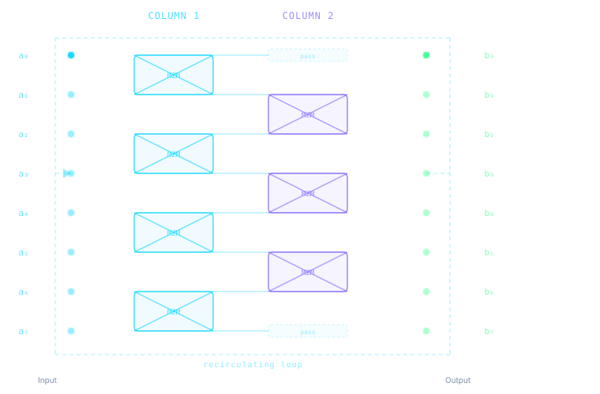

Loop Labs builds photonic chips in lithium niobate that perform AI matrix computations entirely in the optical domain — delivering inference in nanoseconds at a fraction of the energy cost of conventional accelerators.
Our physics engine computes inference time and energy for the same workload on a photonic chip and on an NVIDIA A100 GPU — from first principles.
Figures derived from the Loop Labs physics digital twin. GPU model: NVIDIA A100 FP32, full energy including DRAM fetch, compute, and static power at 400 W TDP.
Training a large language model emits as much CO₂ as a transatlantic flight. But the real scale problem is inference — the billions of daily queries that run on racks of power-hungry GPUs, each consuming hundreds of watts continuously.
The dominant operation in neural networks is multiplying an input vector by a weight matrix. On silicon transistors this means fetching gigabytes of weight data and toggling billions of transistors every second. Physics sets a hard floor on how efficiently electrons can do this.
Photons do not have that floor. Light encodes, routes, and multiplies coherently with near-zero marginal energy per operation. Once the weights are set, the optical field propagates and computes for free.
Modeled from Loop Labs physics engine. Full circuit energy accounting:
capacitive switching, conversion, amplification, and laser supply.
Lithium niobate is the ideal platform for high-speed electro-optic modulation — combining ultra-low drive voltages, minimal optical loss, and full compatibility with telecom infrastructure at 1550 nm.
Lithium niobate shifts its refractive index in direct proportion to an applied electric field — the Pockels effect. Thin-film ridge waveguides concentrate the field tightly, allowing weight updates with low drive voltages and minimal energy per switch.
Mach-Zehnder Modulators arranged in a staggered mesh implement the weight matrix directly in the optical domain. Each modulator routes light between waveguides according to its programmed voltage — the matrix multiply happens as photons propagate.
Instead of a long linear chip, the optical field loops back through the same modulator mesh on every cycle. Each 225 ps pass implements one stage of the computation — the same hardware scales to deep networks without growing the die area.
Computation is encoded in the complex amplitude of a 1550 nm laser. The interference inside each modulator implements the matrix rotation exactly — no thermal drift from transistor switching, no quantisation noise from digital arithmetic.
Dozens of modulators fit on a chip smaller than a fingernail using a standard thin-film LiNbO₃ wafer process. The technology scales to larger networks by increasing waveguide count, not chip area.
Our digital twin tracks every joule: weight programming, signal conversion, optical amplification, and laser supply — all cross-validated against calibrated material constants and compared against real GPU hardware specifications.
One inference pass — from encoded input to digital output — in under ten nanoseconds.
The neural network input is encoded as the intensity and phase of light on a set of parallel waveguides using on-chip modulators at 1550 nm.
Light propagates through the modulator mesh. Each element couples power between adjacent waveguides according to its programmed weight — implementing one matrix stage in a single pass.
The output field is fed back into the chip input via a short loop. Repeating the pass through the same mesh — with updated weights — implements a deeper transformation without a longer chip.
Photodetectors measure the light intensity at each output waveguide. Converters digitise the result and hand it to the next network layer — all within a handful of nanoseconds.
Modulator mesh — optical coupling topology

Each rectangle is a Mach-Zehnder Modulator coupling two adjacent waveguides. Even columns (blue) and odd columns (purple) alternate to implement a full matrix transformation across multiple loop cycles. The dashed border shows the recirculating path.
All figures are derived from our physics digital twin and compared against the NVIDIA A100 — a state-of-the-art data-centre GPU.
| Processor | Type | Energy | Latency |
|---|---|---|---|
| Loop Labs | Photonic | 22 nJ | 7.2 ns |
| NVIDIA A100 | GPU | 2 980 nJ | 45 ns |
Same inference workload on both platforms, modeled from first principles. GPU figure includes DRAM memory access, SRAM, compute energy, and idle power draw over the inference duration. Photonic figure includes weight programming, signal conversion, and laser supply.
Loop Labs is an early-stage deep-tech company developing integrated photonic chips for AI inference acceleration. We combine expertise in integrated photonics, electro-optic materials, and machine learning systems to build hardware that is fundamentally more efficient than digital silicon for the specific computation pattern AI demands.
Our recirculating loop architecture lets a single compact chip implement arbitrarily deep networks by reusing the same optical mesh on each loop cycle — avoiding the area explosion of unrolled photonic arrays while maintaining sub-nanosecond cycle times.
Technology stack
We are looking for research collaborators, early customers, and investors who share our conviction that the next generation of AI infrastructure will be built from light.